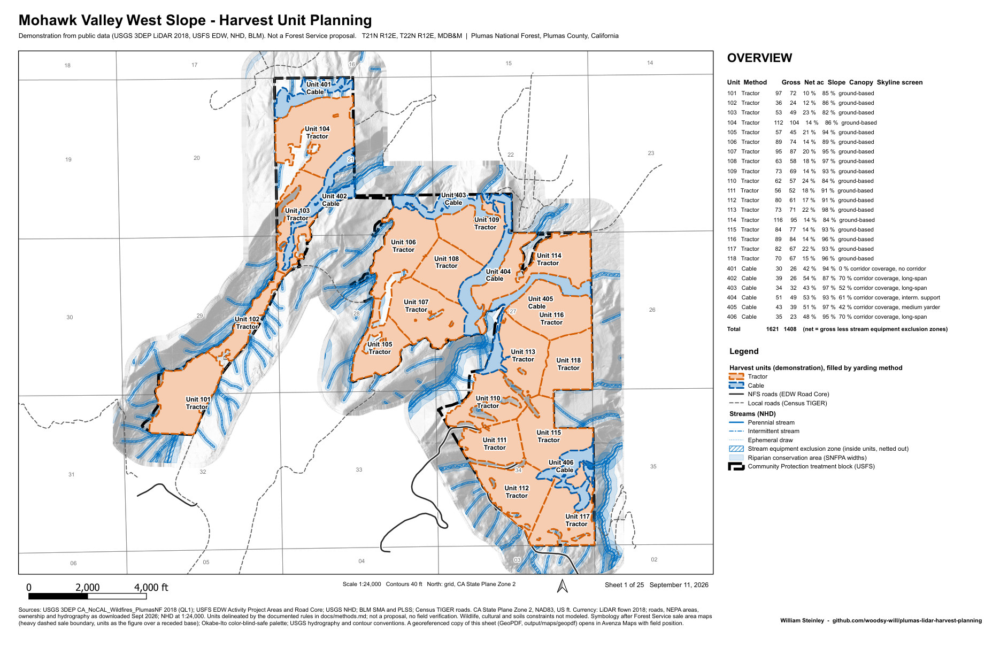
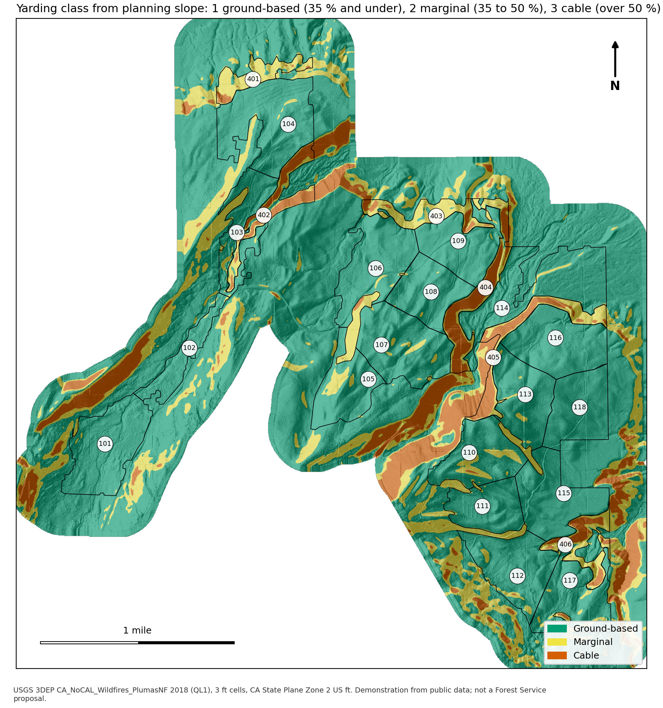
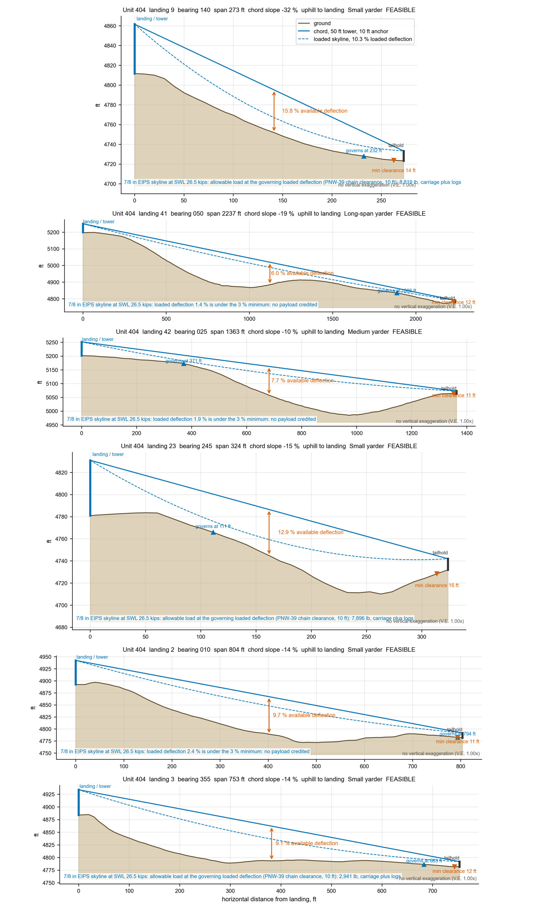
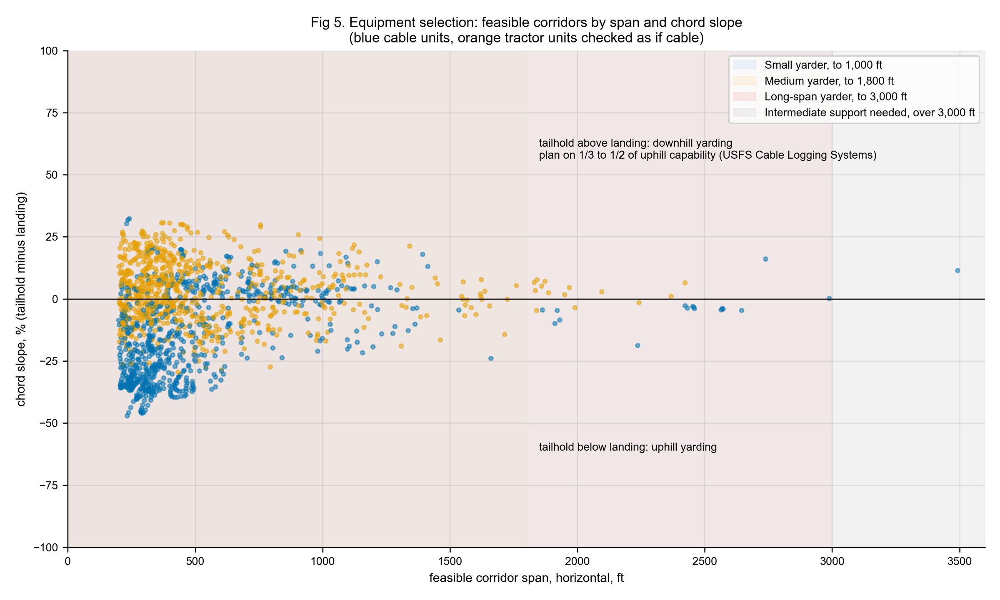
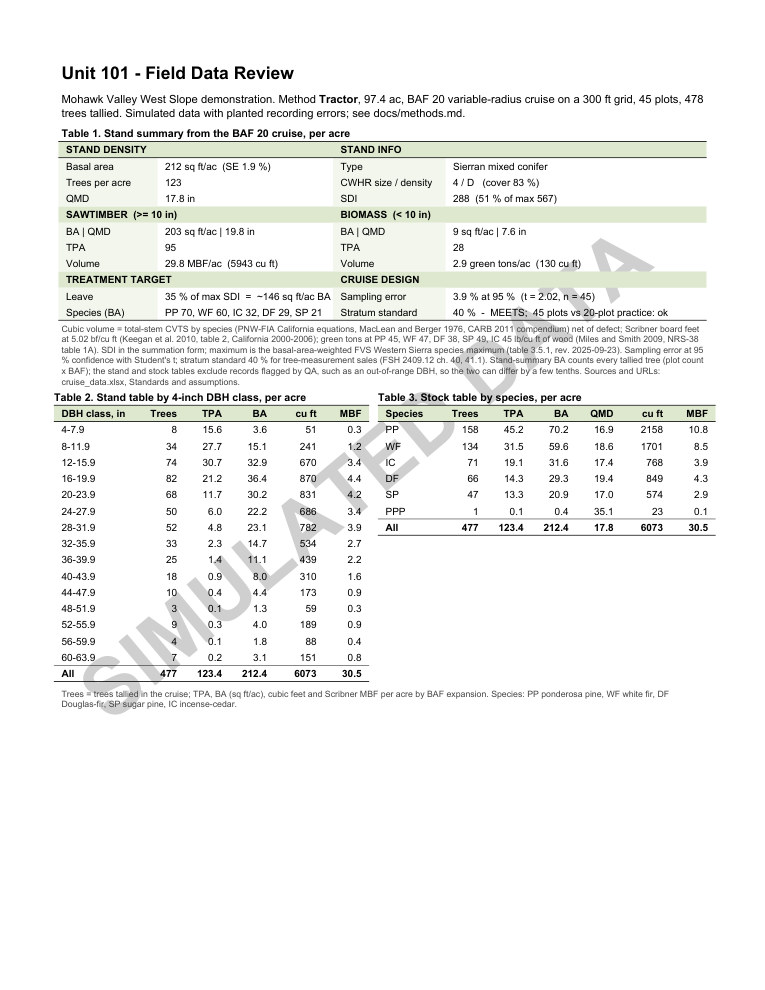

GIS Projects
A harvest-planning workflow rebuilt on public data, and the inventory tooling behind my field work, both published as open source.
Mohawk Valley West Slope: LiDAR-based harvest-unit planning






Problem. Lay out a cable-versus-tractor harvest-unit plan for a 1,816-acre NEPA treatment block on the Plumas National Forest, from raw LiDAR to sale-map sheets.
Role. Solo. Every script, rule and sheet is mine. The workflow mirrors the harvest planning I ran as a Forester III on this forest; that work is confidential, so this runs on an adjacent block I did not work on. Same pipeline, same QA steps, different data.
Data. USGS 3DEP QL1 LiDAR (2018, 650 million points), USFS EDW project areas and roads, NHD, BLM PLSS, Census TIGER.
Method. PDAL and GDAL to 3 ft DTM, CHM and planning slope; rule-based delineation of 24 units; 8,540 skyline corridors from 314 candidate landings screened for deflection, clearance and PNW-39 payload; 25-sheet 11x17 series as print PDF and Avenza GeoPDF from PyQGIS; simulated BAF 20 cruise checked to FSH 2409.12.
Result. 1,621 gross and 1,408 net acres; 18 tractor and 6 cable units, 5 of the 6 with feasible corridors and one flagged for a spur road.
Limits. No field verification; wildlife, cultural and soils constraints not modelled. Next: a live web map and a field check of the CHM.
Tools. PDAL, GDAL, PyQGIS, Python. August to September 2026.
Forest Inventory Analyzer
Problem. Compiling cruise data usually means a licensed compiler or a hand-built workbook.
Role. Sole author.
Data. Survey123 and Field Maps exports, CSV, JSON and Excel plot files.
Method. Rust command-line and web tool: BAF expansion, TPA, basal area, cubic and board-foot volume, QMD, stand and stock tables, Student's t sampling error, growth projections.
Result. v0.2.0, September 2026: CI-tested installers for Windows, macOS and Linux with checksums. 348 tests.
Limits. Built-in volume equations only; no taper models. MIT licence. 2026.
About
I am a forester and GIS analyst with more than eight years in the field and an M.S. in Forestry, based in Gold Run in the northern Sierra Nevada and eligible to sit for the California Registered Professional Forester (RPF) exam. My work has run from federal timber sale and community protection projects on the Plumas National Forest to timber sale layout and cruising across seven states, and from chainsaw fuels treatments to LiDAR-derived forest structure and terrain analysis in R. At Jefferson Resource Company I deployed ArcGIS Pro, Field Maps and Survey123 for field data collection and automated map production and spatial processing with ArcPy and lidR; I still use AI-assisted development tools to build that kind of automation faster. My M.S. thesis on fire return intervals in the East Texas Pineywoods is the basis of a published fire ecology paper on which I am lead author.
Timber sale and harvest-unit mapping, inventory analysis, LiDAR stand structure and post-fire assessment were day-to-day work in ArcGIS Pro, ArcPy and R on federal projects; the cruise compiler below is the one piece of that tooling I have published as open source; the harvest-planning workflow itself is rebuilt from scratch on public data in the first project below. All of my California work has been on National Forest land.
Professional Resume
Download resume (PDF, 2 pages)
Experience
- Write land management plans for private landowners, translating owner objectives into written prescriptions and treatment schedules.
- Perform the prescribed treatments personally: chainsaw and hand thinning, brush and invasive species control.
- Run business operations for the two-person firm: client acquisition, project scoping and invoicing.
- Supervised field crews of up to four across ~8,000 acres of the Plumas National Forest Community Protection Project, overseeing and analyzing 500+ plots and catching layout, marking and survey errors before they reached U.S. Forest Service (USFS) deliverables; implemented National Environmental Policy Act (NEPA) requirements and silvicultural prescriptions in the field, including unit layout for helicopter yarding.
- Led the transition from Avenza Maps Pro to ArcGIS Online, ArcGIS Pro, Field Maps and Survey123, authoring two technical guides and the training materials that drove adoption; eliminated manual re-keying of field data.
- Automated cartographic production and spatial data processing in Python and ArcPy; generated canopy height and digital terrain models (CHM, DTM) from LiDAR in R (lidR), with slope and terrain derivatives informing yarding system selection and harvest unit delineation.
- Developed R and lidR routines for individual tree crown delineation and canopy cover estimation as an open-source alternative to licensed processing software.
- Published and maintained 40+ hosted feature layers and geodatabases and managed offline map areas across three project areas for stream, inventory plot, archaeological and forest health surveys.
- Field liaison between JRC, USFS timber staff and National Forest Foundation partners; supported contract administration and best management practice compliance under a Registered Professional Forester.
- Completed M.S. thesis research and writing on fire return interval effects in East Texas upland pine ecosystems; relocated to California and secured forestry employment in-state.
- Laid out timber sales across seven states, from Rocky Mountain mixed conifer to Gulf Coastal Plain pine, with ground-based systems throughout and cable systems on steep terrain in California and Montana.
- Cruised timber by fixed-plot, variable-radius, strip and 100% methods, including 250+ plots personally run in eastern Oklahoma; compiled cruise data into volume summaries for appraisals, management plans and harvest scheduling.
- Marked timber to silvicultural prescriptions from ponderosa pine and mixed conifer to bottomland hardwood and shortleaf pine; coordinated with landowners, consulting foresters and logging contractors.
- Implemented fuel reduction prescriptions under an RPF with chainsaws, tow-chippers, tracked masticators and hand tools; built control lines to burn plan specifications and worked prescribed fire ignition, holding and mop-up.
- Instructed lab sections of 30–50 undergraduates per semester in Introduction to Forestry and Forest Biometrics: mensuration, sampling design and spatial analysis, with field trips.
- Assisted faculty during the six-week summer field station, staging equipment and tracking accountability for 100+ students in timber cruising, silviculture and management planning exercises.
- Operated a D5 bulldozer to construct control lines and suppress slopovers and spot fires during prescribed burns across East Texas pine plantations; drip-torch ignition, ATV line inspection and hand-tool suppression across multiple burn units.
Education
Thesis: Consequences of Altered Burn Regimes on Plant Community Diversity in the Pineywoods of East Texas (SFA ScholarWorks, full text). Committee: Oswald, Kidd, Glasscock. Xi Sigma Pi Forestry Honor Society.
Minor in Spatial Science, concentration in Fire Management. Coursework in forest biometrics, GIS and remote sensing, fire ecology, spatial science and silviculture.
Certifications & Qualifications
- California Registered Professional Forester (RPF), exam eligible (California Board of Forestry and Fire Protection)
- ISA Certified Arborist, exam eligible (International Society of Arboriculture)
- Qualified Timber Cruiser, U.S. Forest Service Region 3
- Tree Risk Assessment Qualification (TRAQ), International Society of Arboriculture
- CPR, current
Research
M.S. thesis on fire return intervals and understory plant diversity in East Texas upland pine, open access through SFA ScholarWorks.
Journal version: Steinley, W. J., Oswald, B. P., Kidd, K. R., & Glasscock, J. (2024). Influence of altered fire return intervals on plant diversity in the East Texas Pineywoods. Journal of Forest Research, 13(5), 529.
Technical Skills
Each entry says where the skill was used, so the list can be checked against the resume and the projects above.
Forestry & Field Operations
- Timber cruising — fixed-plot, variable-radius, strip and 100% cruises across seven states; 250+ plots run personally in eastern Oklahoma; 500+ plots overseen and checked on the Plumas National Forest.
- Timber sale layout and marking — sale layout from Rocky Mountain mixed conifer to Gulf Coastal Plain pine; unit layout for helicopter yarding on the Plumas; marking to prescriptions in ponderosa pine, mixed conifer, shortleaf pine and bottomland hardwood.
- Logging systems — ground-based systems throughout, cable systems on steep ground in California and Montana, helicopter unit layout on federal timber sales.
- Prescribed fire and fuels reduction — chainsaw, chipper and masticator treatments; control line construction; ignition, holding and mop-up; D5 dozer line on East Texas plantation burns.
- Crew supervision and quality control — crews of up to four across roughly 8,000 acres; catching layout, marking and survey errors before they reached USFS deliverables.
- NEPA and silvicultural prescriptions — implemented NEPA requirements and prescriptions in the field on the Plumas Community Protection Project; land management plans for private landowners through Athena Resource Group.
GIS & Spatial Science
- ArcGIS Pro, ArcGIS Online, Field Maps, Survey123 — led JRC's move off Avenza Maps; published and maintained 40+ hosted feature layers, managed offline map areas across three project areas, wrote two technical guides and the crew training.
- LiDAR processing — canopy height and terrain models (CHM, DTM) in R (lidR) at JRC on Plumas National Forest projects, with tree crown delineation and canopy cover estimation from the point clouds.
- Slope and terrain modeling — terrain derivatives that informed yarding system selection and harvest unit delineation at JRC.
- Cartographic production — automated map assembly in ArcPy at JRC for sale layout, inventory and post-fire deliverables.
- QGIS, GDAL, PDAL — open-source toolchain used alongside ArcGIS Pro for terrain processing and map production.
- Geodatabases and coordinate systems — project geodatabases and offline areas at JRC; coordinate reference system management across sale layout in seven states.
- Web mapping and imagery — ArcGIS Online web maps and hosted layers at JRC; post-fire assessment in ArcGIS Pro on federal projects.
Programming & Data
- R (lidR, terra, sf, tidyverse) — individual tree crown delineation and canopy cover routines at JRC as an open-source alternative to licensed software; thesis analysis.
- Python (ArcPy, pandas, GeoPandas, GDAL, NumPy) — cartographic and spatial-processing automation at JRC.
- Statistical analysis — sampling statistics, confidence intervals and plots-needed calculations in the Forest Inventory Analyzer; plant diversity analysis for the thesis in R.
- Excel — cruise compilation and inventory workbooks at JRC and in consulting.
- Rust — the Forest Inventory Analyzer, a cruise compiler with a web UI and CI builds.
- Git and GitHub — the Forest Inventory Analyzer is a public repository with CI, a release workflow and documented usage.
- AI-assisted development (Claude Code, Cursor) — accelerated ArcPy and lidR automation at JRC, with outputs validated against manual quality-control checks.
- Technical writing — the Avenza to Field Maps transition guides at JRC; the analyzer README and this site.
Get In Touch
Open to forester and GIS analyst roles across the western and southeastern United States, willing to relocate, and available for consulting on inventory, LiDAR and harvest-unit mapping. Based in Gold Run, California.